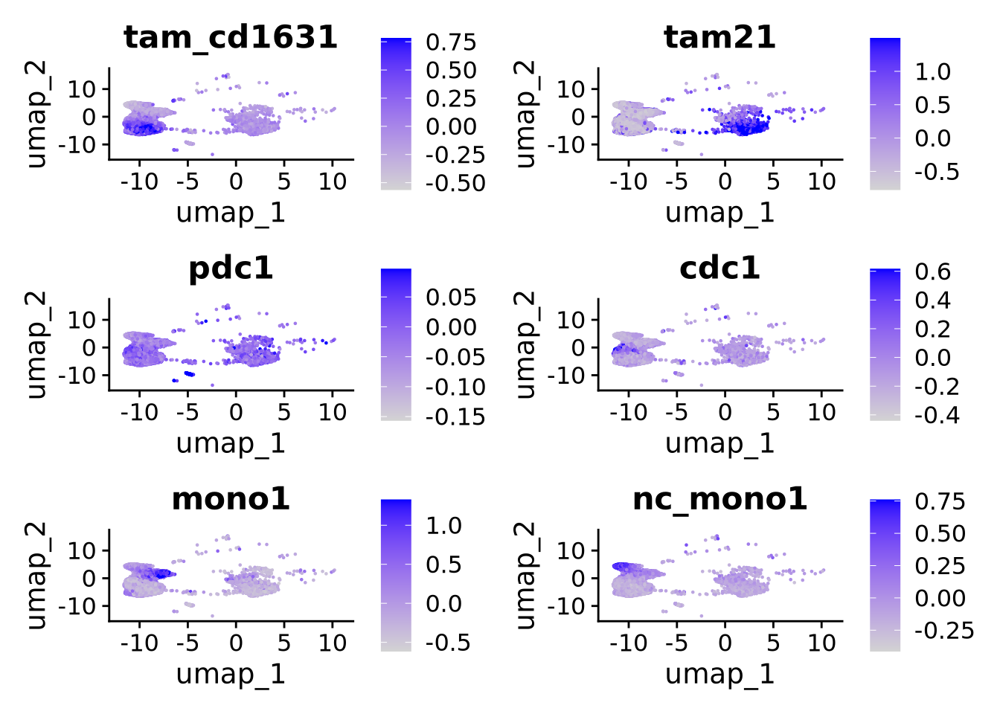
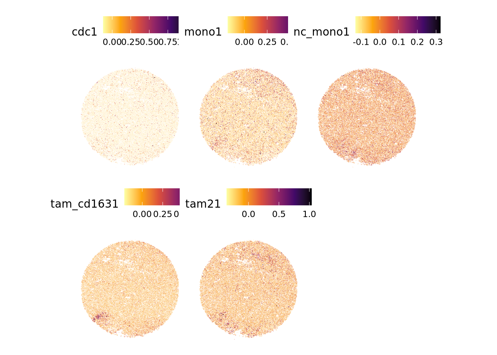
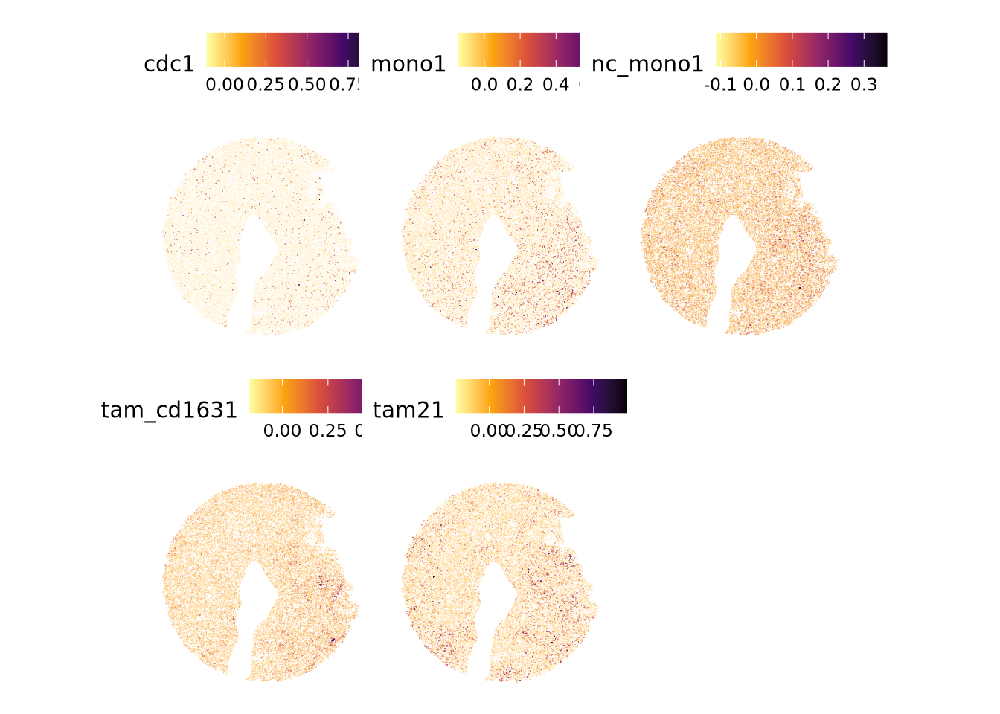
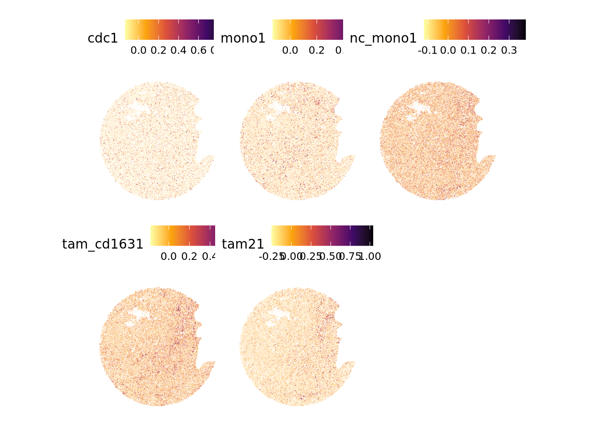
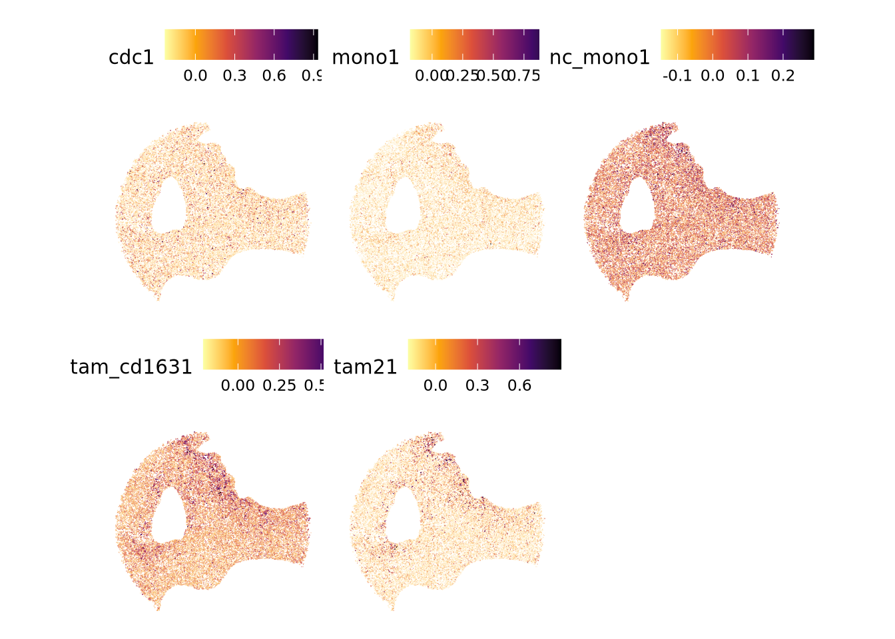
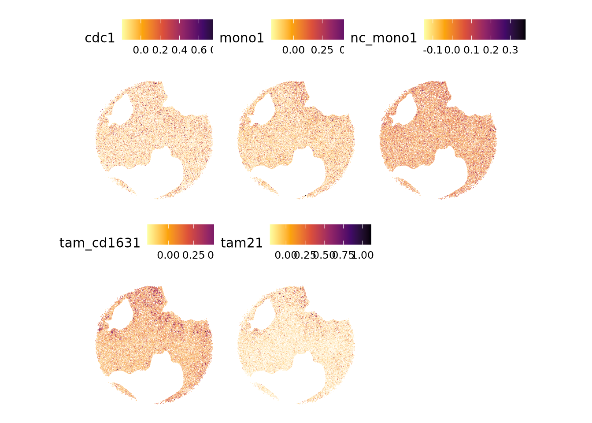
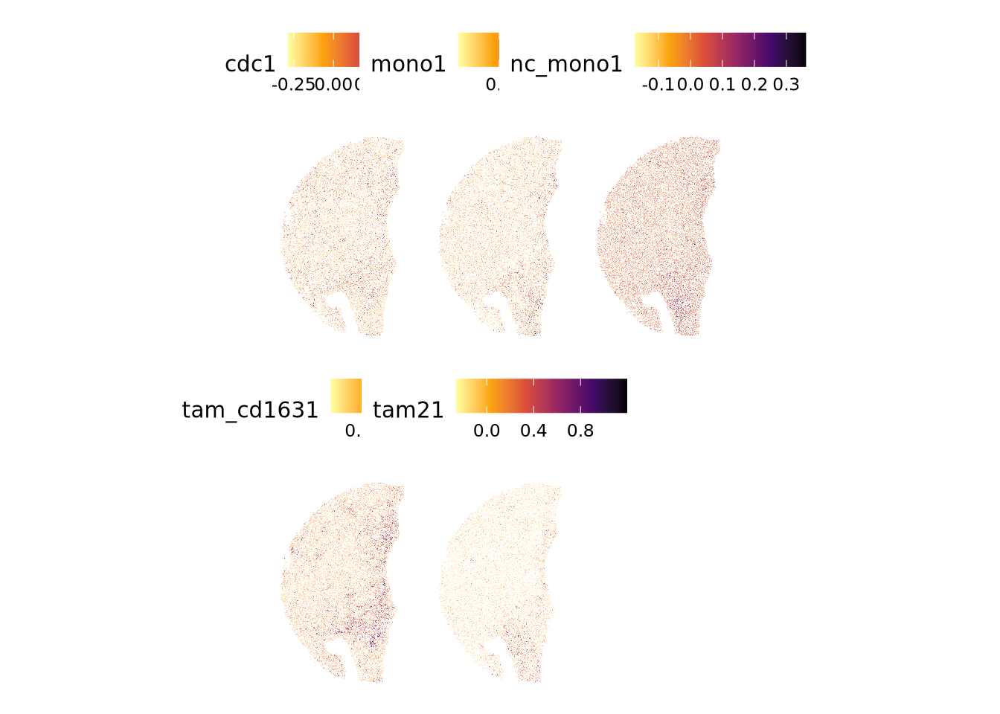

── Conflicts ────────────────────────────────────────── tidyverse_conflicts() ──
✖ dplyr::filter() masks stats::filter()
✖ dplyr::lag() masks stats::lag()
ℹ Use the conflicted package (<http://conflicted.r-lib.org/>) to force all conflicts to become errors
library(ComplexHeatmap)
Loading required package: grid
========================================
ComplexHeatmap version 2.22.0
Bioconductor page: http://bioconductor.org/packages/ComplexHeatmap/
Github page: https://github.com/jokergoo/ComplexHeatmap
Documentation: http://jokergoo.github.io/ComplexHeatmap-reference
If you use it in published research, please cite either one:
- Gu, Z. Complex Heatmap Visualization. iMeta 2022.
- Gu, Z. Complex heatmaps reveal patterns and correlations in multidimensional
genomic data. Bioinformatics 2016.
The new InteractiveComplexHeatmap package can directly export static
complex heatmaps into an interactive Shiny app with zero effort. Have a try!
This message can be suppressed by:
suppressPackageStartupMessages(library(ComplexHeatmap))
========================================
library(stringr)library(readxl)library(circlize)
========================================
circlize version 0.4.17
CRAN page: https://cran.r-project.org/package=circlize
Github page: https://github.com/jokergoo/circlize
Documentation: https://jokergoo.github.io/circlize_book/book/
If you use it in published research, please cite:
Gu, Z. circlize implements and enhances circular visualization
in R. Bioinformatics 2014.
This message can be suppressed by:
suppressPackageStartupMessages(library(circlize))
========================================
myeloid_clusters <- myeloid_clusters %>%AddModuleScore(features =list(tam_cd163), name ="tam_cd163") %>%AddModuleScore(features =list(tam2), name ="tam2") %>%AddModuleScore(features =list(pdc), name ="pdc") %>%AddModuleScore(features =list(cdc), name ="cdc") %>%AddModuleScore(features =list(mono), name ="mono") %>%AddModuleScore(features =list(nc_mono), name ="nc_mono")
7 Check that the gene sets are specific to the cluster
FeaturePlot(myeloid_clusters, features =c("tam_cd1631", "tam21", "pdc1", "cdc1", "mono1", "nc_mono1"), max.cutoff ="q95")

8 Add signature score to spatial objects
P102TA_10_RNA <- P102TA_10_RNA %>%AddModuleScore(features =list(tam_cd163), name ="tam_cd163") %>%AddModuleScore(features =list(tam2), name ="tam2") %>%AddModuleScore(features =list(pdc), name ="pdc") %>%AddModuleScore(features =list(cdc), name ="cdc") %>%AddModuleScore(features =list(mono), name ="mono") %>%AddModuleScore(features =list(nc_mono), name ="nc_mono")
Warning: The following features are not present in the object: APOC2, CCL3L1,
not searching for symbol synonyms
Warning: The following features are not present in the object: LRRC26, TLR9,
KRT5, HIST1H2AC, GRASP, HIST1H1C, Z93241.1, HIST1H1D, not searching for symbol
synonyms
Warning: The following features are not present in the object: PALM2-AKAP2, not
searching for symbol synonyms
Warning: The following features are not present in the object: S100A12, EREG,
AC015912.3, not searching for symbol synonyms
Warning: The following features are not present in the object: SMIM25, WARS,
not searching for symbol synonyms
P102TA_17_RNA <- P102TA_17_RNA %>%AddModuleScore(features =list(tam_cd163), name ="tam_cd163") %>%AddModuleScore(features =list(tam2), name ="tam2") %>%AddModuleScore(features =list(pdc), name ="pdc") %>%AddModuleScore(features =list(cdc), name ="cdc") %>%AddModuleScore(features =list(mono), name ="mono") %>%AddModuleScore(features =list(nc_mono), name ="nc_mono")
Warning: The following features are not present in the object: APOC2, CCL3L1,
DBNDD2, not searching for symbol synonyms
Warning: The following features are not present in the object: LRRC26, SCT,
PTCRA, SHD, TLR9, KRT5, LIME1, HIST1H2AC, GRASP, HIST1H1C, Z93241.1, HIST1H1D,
not searching for symbol synonyms
Warning: The following features are not present in the object: PALM2-AKAP2, not
searching for symbol synonyms
Warning: The following features are not present in the object: S100A12, EREG,
TREM1, not searching for symbol synonyms
Warning: The following features are not present in the object: SMIM25, WARS,
GPBAR1, not searching for symbol synonyms
P102TA_33_RNA <- P102TA_33_RNA %>%AddModuleScore(features =list(tam_cd163), name ="tam_cd163") %>%AddModuleScore(features =list(tam2), name ="tam2") %>%AddModuleScore(features =list(pdc), name ="pdc") %>%AddModuleScore(features =list(cdc), name ="cdc") %>%AddModuleScore(features =list(mono), name ="mono") %>%AddModuleScore(features =list(nc_mono), name ="nc_mono")
Warning: The following features are not present in the object: APOC2, CCL3L1,
not searching for symbol synonyms
Warning: The following features are not present in the object: LRRC26, SCT,
SHD, TLR9, LIME1, HIST1H2AC, GRASP, HIST1H1C, A1BG, HIST1H1D, not searching for
symbol synonyms
Warning: The following features are not present in the object: PALM2-AKAP2, not
searching for symbol synonyms
Warning: The following features are not present in the object: AC015912.3, not
searching for symbol synonyms
Warning: The following features are not present in the object: SMIM25, WARS,
not searching for symbol synonyms
P108TA_26_RNA <- P108TA_26_RNA %>%AddModuleScore(features =list(tam_cd163), name ="tam_cd163") %>%AddModuleScore(features =list(tam2), name ="tam2") %>%AddModuleScore(features =list(pdc), name ="pdc") %>%AddModuleScore(features =list(cdc), name ="cdc") %>%AddModuleScore(features =list(mono), name ="mono") %>%AddModuleScore(features =list(nc_mono), name ="nc_mono")
Warning: The following features are not present in the object: APOC2, CCL3L1,
DBNDD2, not searching for symbol synonyms
Warning: The following features are not present in the object: LRRC26, SCT,
TLR9, HIST1H2AC, GRASP, HIST1H1C, HIST1H1D, not searching for symbol synonyms
Warning: The following features are not present in the object: PALM2-AKAP2, not
searching for symbol synonyms
Warning: The following features are not present in the object: SMIM25, WARS,
not searching for symbol synonyms
P108TA_29_RNA <- P108TA_29_RNA %>%AddModuleScore(features =list(tam_cd163), name ="tam_cd163") %>%AddModuleScore(features =list(tam2), name ="tam2") %>%AddModuleScore(features =list(pdc), name ="pdc") %>%AddModuleScore(features =list(cdc), name ="cdc") %>%AddModuleScore(features =list(mono), name ="mono") %>%AddModuleScore(features =list(nc_mono), name ="nc_mono")
Warning: The following features are not present in the object: APOC2, CCL3L1,
DBNDD2, not searching for symbol synonyms
Warning: The following features are not present in the object: LRRC26, SCT,
HIST1H2AC, GRASP, HIST1H1C, Z93241.1, HIST1H1D, not searching for symbol
synonyms
Warning: The following features are not present in the object: PALM2-AKAP2, not
searching for symbol synonyms
Warning: The following features are not present in the object: SMIM25, WARS,
not searching for symbol synonyms
P108TA_30_RNA <- P108TA_30_RNA %>%AddModuleScore(features =list(tam_cd163), name ="tam_cd163") %>%AddModuleScore(features =list(tam2), name ="tam2") %>%AddModuleScore(features =list(pdc), name ="pdc") %>%AddModuleScore(features =list(cdc), name ="cdc") %>%AddModuleScore(features =list(mono), name ="mono") %>%AddModuleScore(features =list(nc_mono), name ="nc_mono")
Warning: The following features are not present in the object: CCL3L1, not
searching for symbol synonyms
Warning: The following features are not present in the object: LRRC26, TLR9,
HIST1H2AC, GRASP, HIST1H1C, Z93241.1, HIST1H1D, not searching for symbol
synonyms
Warning: The following features are not present in the object: PALM2-AKAP2, not
searching for symbol synonyms
Warning: The following features are not present in the object: SMIM25, WARS,
not searching for symbol synonyms
P108TA_32_RNA <- P108TA_32_RNA %>%AddModuleScore(features =list(tam_cd163), name ="tam_cd163") %>%AddModuleScore(features =list(tam2), name ="tam2") %>%AddModuleScore(features =list(pdc), name ="pdc") %>%AddModuleScore(features =list(cdc), name ="cdc") %>%AddModuleScore(features =list(mono), name ="mono") %>%AddModuleScore(features =list(nc_mono), name ="nc_mono")
Warning: The following features are not present in the object: CCL3L1, not
searching for symbol synonyms
Warning: The following features are not present in the object: TLR9, HIST1H2AC,
GRASP, HIST1H1C, Z93241.1, HIST1H1D, not searching for symbol synonyms
Warning: The following features are not present in the object: PALM2-AKAP2, not
searching for symbol synonyms
Warning: The following features are not present in the object: SMIM25, WARS,
not searching for symbol synonyms
9 Spatially plot myeloid cluster scores
SpatialFeaturePlot(P102TA_10_RNA, features =c("cdc1", "mono1", "nc_mono1", "tam_cd1631", "tam21"), alpha =c(0.01, 1)) &scale_fill_viridis_c(option ="inferno", direction =-1)

SpatialFeaturePlot(P102TA_17_RNA, features =c("cdc1", "mono1", "nc_mono1", "tam_cd1631", "tam21"), alpha =c(0.01, 1)) &scale_fill_viridis_c(option ="inferno", direction =-1)

SpatialFeaturePlot(P102TA_33_RNA, features =c("cdc1", "mono1", "nc_mono1", "tam_cd1631", "tam21"), alpha =c(0.01, 1)) &scale_fill_viridis_c(option ="inferno", direction =-1)

SpatialFeaturePlot(P108TA_26_RNA, features =c("cdc1", "mono1", "nc_mono1", "tam_cd1631", "tam21"), alpha =c(0.01, 1)) &scale_fill_viridis_c(option ="inferno", direction =-1)

SpatialFeaturePlot(P108TA_29_RNA, features =c("cdc1", "mono1", "nc_mono1", "tam_cd1631", "tam21"), alpha =c(0.01, 1)) &scale_fill_viridis_c(option ="inferno", direction =-1)

SpatialFeaturePlot(P108TA_30_RNA, features =c("cdc1", "mono1", "nc_mono1", "tam_cd1631", "tam21"), alpha =c(0.01, 1)) &scale_fill_viridis_c(option ="inferno", direction =-1)

SpatialFeaturePlot(P108TA_32_RNA, features =c("cdc1", "mono1", "nc_mono1", "tam_cd1631", "tam21"), alpha =c(0.01, 1)) &scale_fill_viridis_c(option ="inferno", direction =-1)